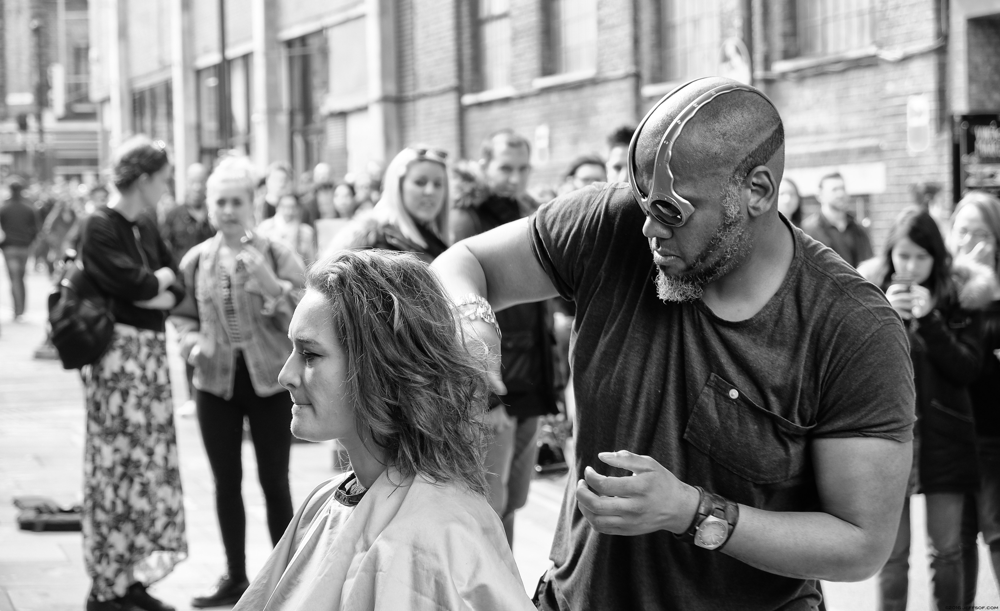

I capture the realness behind feminism, no filter.

My work focuses on candid photographs taken on location at events for women's rights, places where women are owning their own space, and fleeting encounters on the streets.
My work engulfs viewers in real moments of strength, vulnerability, and solidarity.
Portfolio

Father
Denver, Colorado June 25, 2018

Flag
Austin, Texas July 17th, 2018

Haircut
Haircut
New York City March 31st, 2018

Street Art
Montreal, Canada September 1st, 2018

Black Girl Magic
Houston, Texas January 17, 2016